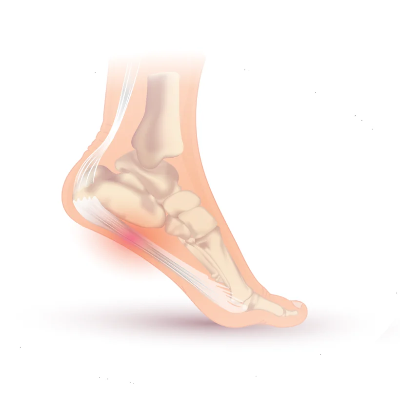
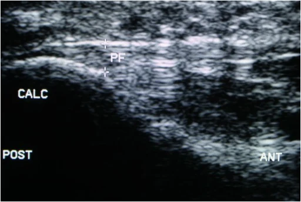

La fascia plantare è una robusta lamina fibrosa che corre sotto il piede, dal tallone alle dita, e sostiene l'arco. Quando la zona in cui si attacca al calcagno viene sovraccaricata, compare un dolore molto caratteristico: sotto il tallone, nei primi passi dopo il riposo.
Una precisazione che toglie preoccupazione a molte persone: lo sperone calcaneare che si vede in radiografia non è la causa del dolore. Si trova anche in moltissime persone che non hanno mai avuto male, e il trattamento non lo riguarda.

Come si manifesta
- Dolore sotto il tallone, verso la parte interna, con un punto preciso che fa male a premerlo.
- È tipico il dolore nei primi passi del mattino o dopo essere stati seduti a lungo, che si attenua dopo qualche minuto di cammino.
- Torna a peggiorare dopo una giornata in piedi o un'attività prolungata.
- Può peggiorare camminando scalzi o con scarpe piatte e rigide.
- In genere non ci sono formicolii: se ci sono, il quadro va rivalutato (vedi intrappolamento dei nervi plantari).
Quando preoccuparsi
Contatta il medico presto se
- compaiono formicolio o perdita di sensibilità alla pianta del piede;
- il dolore è presente a riposo e di notte, e non cambia con la posizione;
- il tallone è gonfio, caldo e arrossato, o hai febbre;
- il dolore è comparso dopo un trauma, o si concentra sui lati del tallone più che sotto;
- hai dolore e rigidità della schiena al mattino, o dolore ad altre inserzioni tendinee.
Cosa puoi fare tu
Fai
- Fai lo stretching specifico della fascia plantare e del polpaccio: è uno dei trattamenti con le prove più solide, sia a breve sia a lungo termine.[1]
- Usa scarpe con un buon sostegno e una suola ammortizzata, ed evita di camminare scalzo in casa nei periodi dolorosi.
- Se il dolore dei primi passi è il tuo problema principale, chiedi del tutore notturno: è indicato proprio in questa situazione, per uno-tre mesi.[1]
- Riduci temporaneamente il tempo in piedi e i tragitti lunghi, senza fermarti del tutto.
- Per la terapia farmacologica chiedi al medico.
Non fare
- Non concentrarti sullo sperone: non è il bersaglio del trattamento.
- Non contare sui soli plantari per il dolore nel breve periodo: la linea guida indica di non usarli da soli a questo scopo.[1]
- Non affrettarti a fare esami diagnostici senza aver chiesto il parere del tuo medico.
Servono esami?
Nella grande maggioranza dei casi no: la storia del dolore dei primi passi e la sede sono sufficienti. La radiografia non serve a confermare la diagnosi, e lo sperone che eventualmente mostra non cambia il trattamento.

Gli esami diventano utili quando il quadro non è tipico, quando ci sono disturbi della sensibilità, o quando non si risponde a un percorso ben condotto. È il medico specialista che valuta sulla base della visita se siano necessari.
Le cure, e quanto funzionano
Su questa condizione esiste una linea guida recente, che classifica le raccomandazioni per forza delle prove.[1]
Con le prove più solide
- Terapia manuale articolare e sui tessuti molli dell'arto inferiore.
- Stretching specifico della fascia plantare e dei muscoli del polpaccio, per il dolore a breve e a lungo termine.
- Taping rigido o elastico del piede, insieme ad altri trattamenti, per un massimo di sei settimane.
- Tutore notturno per uno-tre mesi, in chi ha il dolore tipico dei primi passi del mattino.
- Gli ultrasuoni non vanno usati per potenziare lo stretching.
Con prove di livello intermedio
- Laser a bassa potenza, all'interno di un programma riabilitativo.
- Needling a secco sui punti trigger del polpaccio e dei muscoli plantari.
- Esercizio con resistenza per la muscolatura del piede e della caviglia.
Sui plantari
La linea guida li colloca in modo preciso: da non usare da soli per il dolore a breve termine, ma utilizzabili insieme ad altri trattamenti.[1] È una distinzione che spiega perché a volte funzionano e a volte deludono.
Le altre opzioni, comprese le terapie iniettive e le onde d'urto, vanno correttamente indicate dallo specialista quando il percorso di base non è bastato.
Quando serve lo specialista
Per confermare che il dolore venga dalla fascia e non da una delle altre cause di dolore al tallone, e per impostare correttamente stretching, taping e tutore notturno, che sono i trattamenti con le prove migliori e anche quelli che più spesso vengono fatti in modo incompleto.
E, se il dolore resiste a un percorso ben condotto, per discutere, numeri alla mano, quale trattamento sia più idoneo per la tua situazione.
Da dove vengono queste informazioni
- Koc TA Jr, Bise CG, Neville C, Carreira D, Martin RL, McDonough CM. Heel pain — plantar fasciitis: revision 2023. Clinical practice guidelines. J Orthop Sports Phys Ther 2023;53(12):CPG1–CPG39. doi:10.2519/jospt.2023.0303
Scheda aggiornata il 9 novembre 2026. Prossima revisione prevista entro novembre 2028.